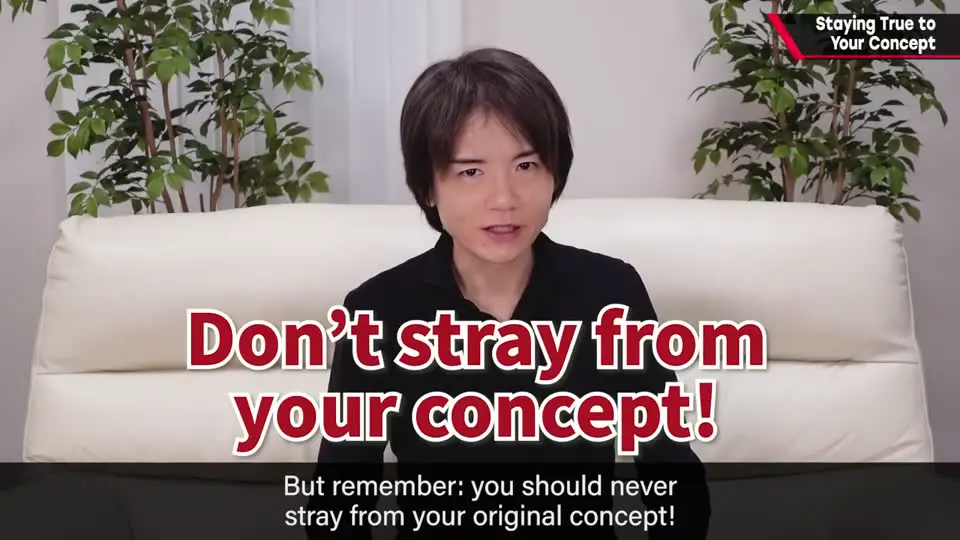
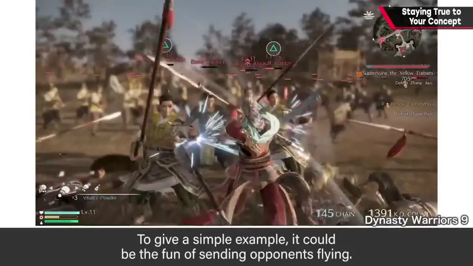
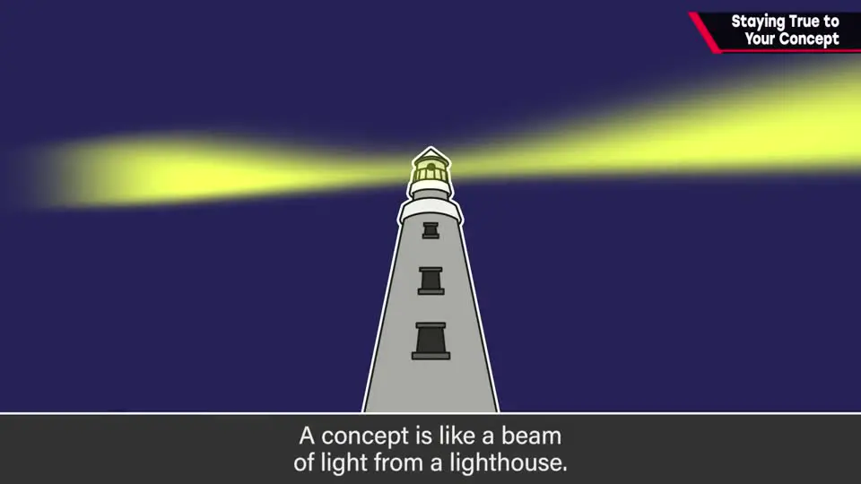
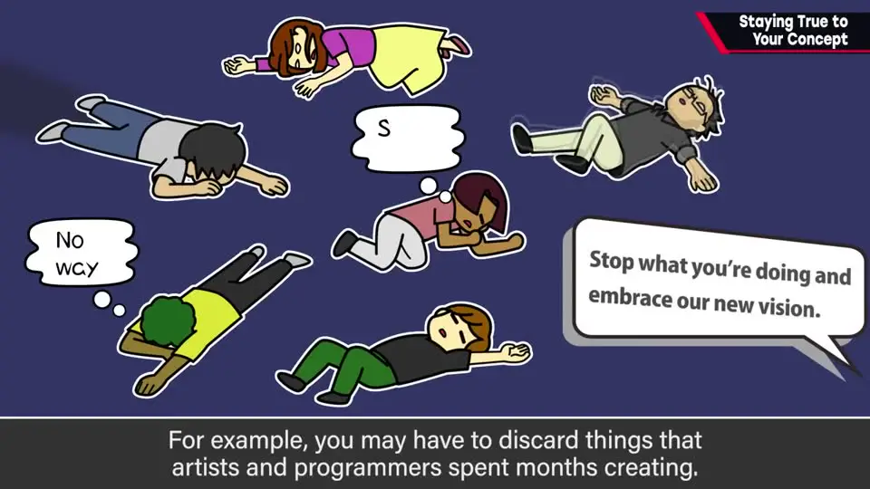
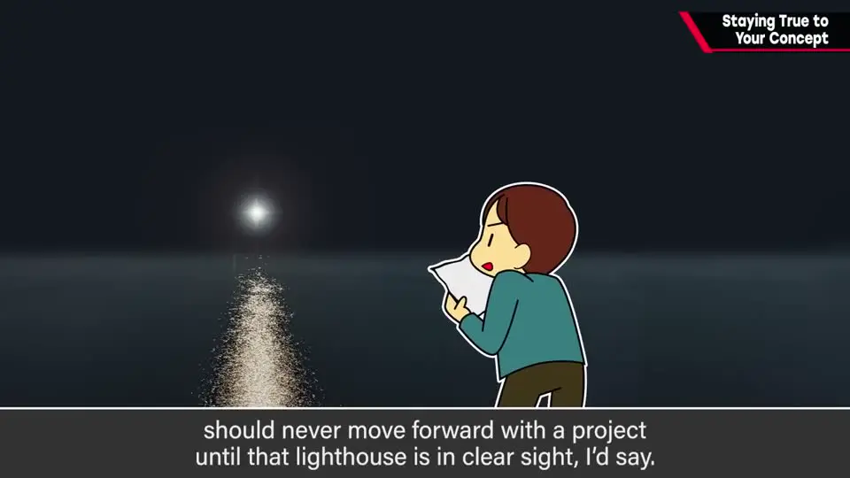

速览
游戏开发通常很漫长，做久了会搞不清哪里有趣。但最初定下的概念（concept）绝不能弯折——或者说，任何时候都别看丢它。概念就是决定游戏魅力方向的核心，例如「把对手打飞的快感」「立体的剧本结构讲深刻的故事」「在笔直道路上冲刺的爽快感」。做出来的游戏偏离了预想就中途改方向，不太推荐。概念像灯塔的光：暴风雨来、陷入黑暗，也始终朝那个方向；否则就会迷失，越陷越深。跟着开发中偶然出现的乐趣灵活调整、scrap and build 也是常见做法，但可能浪费大量素材——美术或程序员几个月的成果被丢掉，成本和士气都受损。樱井甚至认为：至少在总监能随时清楚看到灯塔之前，不应推进项目。新项目里员工往往要做出来才懂魅力，所以总监要坚定地看着最初的方向，毫不犹豫地前进，才能充分利用团队做出的资源。
1. 长期开发中，别看丢最初的概念 0:04
游戏开发通常会持续很久。长期开发累了，就会开始搞不清「哪里、怎样有趣」。

2. 概念 = 决定游戏魅力方向的核心 0:28
立项时一定会想某种概念。说得通俗些，比如：
- 把对手打飞的快感；
- 用立体的剧本结构讲深刻的故事；
- 在笔直的道路上一路冲刺的爽快感。
也就是说，概念是为游戏魅力定方向的核心。因为做出来的东西偏离了预想就中途改方向，不太推荐。

3. 概念像灯塔的光 0:56

- 暴风雨来也好、陷入黑暗也好，只有朝那个方向前进这件事永远不要改。
- 否则就会迷失；一旦迷失，又会因此越陷越深。
跟着开发中偶然出现的乐趣灵活调整，也是一种方法，可能还更常见；也有 scrap and build（推倒重来）的做法。但它们可能浪费大量制作素材：
- 一位美术或程序员辛苦几个月的成果可能被丢掉——无论从哪方面都想避免；
- 成本自不必说，员工的士气也会下降。

4. 总监必须随时看清灯塔 1:50
- 说实话，新项目往往要做出来，员工才明白它的魅力；企划书再怎么讲乐趣，也无法仅凭它理解游戏的好。
- 樱井还被人在完成后说过：「现在终于明白你想做什么了。」
- 想想现有热门游戏的企划书就懂：乐趣怎样都难以体现在纸面上，其他内容中也有很多成为血肉的乐趣。
- 所以至少总监要看准最初决定的方向，毫不犹豫地前进。能笔直推进，就能充分利用员工做出的资源。

魅力方向的核心"] --> D["总监随时看清方向"] D --> S["毫不犹豫地笔直推进"] S --> R["充分利用团队做出的资源"] X["中途改方向 / 频繁推倒重来"] -.-> L["迷失 · 浪费素材 · 士气下降"]
自测题
1. 樱井所说的「概念」是什么？举了哪些例子？
决定游戏魅力方向的核心。例如：把对手打飞的快感；用立体的剧本结构讲深刻的故事；在笔直的道路上一路冲刺的爽快感。 0:28
2. 为什么不推荐中途改方向或频繁 scrap and build？
会迷失、越陷越深；而且可能浪费大量制作素材，例如美术或程序员几个月的成果被丢掉，既增加成本，也降低员工士气。 1:15
3. 樱井认为在什么条件满足之前不应推进项目？为什么总监必须看清方向？
至少在总监能随时清楚看到「灯塔」（概念）之前。因为新项目里员工往往要做出来才懂它的魅力，企划书也难以传达，所以总监要坚定朝最初方向前进，才能充分利用团队做出的资源。 1:50